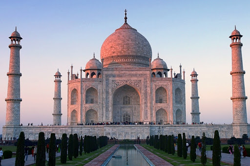
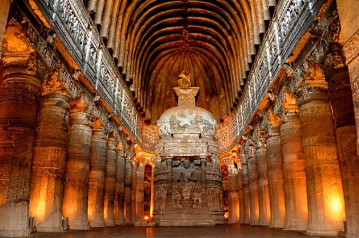
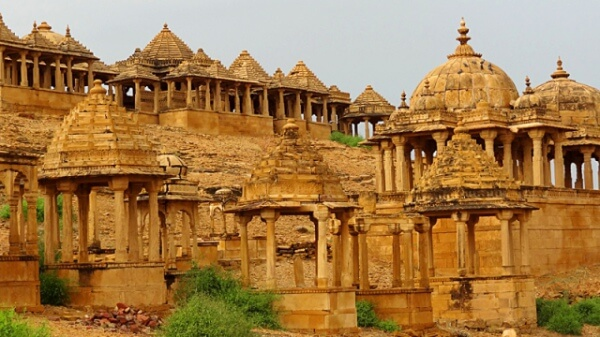
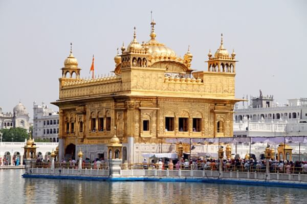
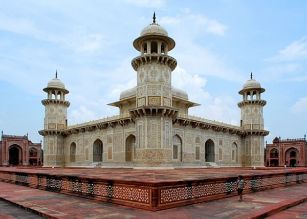

Індія
Респу́бліка І́ндія або І́ндія — країна в Південній Азії. На північному заході межує з Пакистаном; на півночі — з КНР, Непалом і Бутаном; на сході — з М'янмою і Бангладеш. На півдні вузька Полкська протока і Манарська затока відділяють її від Шрі-Ланки. Протокою між островами Великий Нікобар і Суматра проходить морський кордон між Індією та Індонезією. Територія — 3 166 829 км² (є 7-ю країною у світі за географічною площею). Довжина з півночі на південь — понад 3000 км; з заходу на схід — близько 2000 км. Кількість населення — 1 млрд. 358 млн осіб (2013 р.; у 1990 р. — 844 млн.) Це друга за величиною населення, — після Китаю, — держава на планеті Земля. Столиця — Нью-Делі.
Тадж-Махал

Цей величезний мавзолей розташований у Агрі й побудований із білого мармуру
за наказом імператора моголів Шаха Джахана на згадку про його кохану дружину.
- Будівництво грандіозного мавзолею, що перевершував красою й розмірами всі
інші, тривало понад двадцять років. У роботі брали участь понад двадцять тисяч людей.
- Висота Тадж-Махалу разом із куполом досягає 74 метрів. По кутках мавзолею
здіймаються чотири витончених мінарети висотою по 42 метри. Стіни Тадж-Махала викладені
білим полірованим мармуром, що сяє як сніг під променями полуденного сонця.
- Прекрасний своїми досконалими формами, Тадж-Махал вражає й деталями -
витонченою різьбою, ажурними решітками й дорогоцінними кольоровими камінчиками,
що виблискують у білосніжних стінах. Склепінчасті переходи прикрашені арабською
в'яззю, що увічнила на камені деякі із сур Корану.
Печери Аджанти
Печери Аджанти були створені у II столітті до н.е зі скелі у формі підкови уздовж ріки Вагора. Вони використовувалися буддистськими ченцями як молитовні зали й монастирі протягом приблизно дев'яти століть, після чого несподівано були покинуті. Відкриті знову 1819 року. Печери пронумеровані зі сходу на захід, від 1 до 29. Сьогодні всі печери з'єднані між собою терасою, але у стародавні часи до кожної з печер вів окремий хід від набережної. Тут зберігається безліч шедеврів буддистського мистецтва. Будда тут зображений тільки в символічній формі, у вигляді трону або слідів. В інших печерах розташовуються барвисті фрески і статуї, що зображують життя (й колишні життя) Будди.
Форт Джайсалмер

Одна з найкрасивіших фортець в Індії. Однак потік туристів у це місце не такий
великий, через його віддаленість.
Чудовий форт Джайсалмер побудований на 80-метровому пагорбі. За багато століть тут мало
що змінилося, і навряд чи десь іще знайдеться місце, де настільки ж багато будівель
розміщуються в такому маленькому просторі. У форту безліч витих вуличок, і тут є:
величезні брами, палац магараджі, внутрішній двір і гарно оздоблені храми Джайн.
Найкрасивішими з хавелі є хавелі, побудовані купцями Джайсалмера: Петвон кі Хавелі,
Салім Сінгх кі Хавелі і Натхмал кі Хавелі.
У Джайсалмері організовуються походи на верблюдах, і це чудова можливість більше
дізнатися про пустелю. Більшість походів триває від трьох до чотирьох днів. Найкращий
час для візиту сюди - з жовтня по лютий.
Золотий храм Хармандір-Сахіб

Храм по праву вважається одним із найбільш шанованих і найстаріших в Індії.
Це священна Мекка сикхів. Будівництво храму розпочалося в XVI столітті самим Гуру, а
в XIX столітті верхні поверхи храму були покриті золотом.
Золотий храм стоїть у центрі штучного озера, й дорога до нього лежить вузьким
мармуровим мостом - колись вважалося, що пройти до святилища можуть тільки праведники,
і шлях через озеро прирівнювався до очищення душі.
Храмовий комплекс розкиданий по досить великій площі і складається з декількох
десятків будівель, але центральне місце в ньому займає Золотий храм. Це невелика
двоповерхова будівля з альтанкою на даху, яку вдень займають читці, які виголошують
уривки зі священної книги.
Усипальня Ітемад-уд-Даули

Усипальня, а інакше мавзолей Ітемад-уд-Даули, стоїть у центрі чудового перського
парку Агри. Вона відома як "скринька з коштовностями", і вважається своєрідною
"репетицією" перед побудовою знаменитого Тадж-Махала, тому іноді її називають
"Малий Тадж" або "Бейбі Тадж".
Усипальня являє собою комплекс, що складається з самої усипальні та декількох
"супровідних" будівель. Будівництво гробниці велося з 1622 по 1628 рік, за наказом
Нур Джахан.
Будівля має чотирикутну форму, і стоїть на невеликому "п'єдесталі", висотою трохи
більше метра, площею близько 50 кв. м. На кожному кутку будівлі є шестигранні мінарети
висотою понад 13 метрів. Стіни з білого мармуру прикрашені інкрустацією з напівкоштовних
каменів: онікса, лазуриту, яшми, сердоліку, топазу, якими викладені справжні картини -
дерева, вази з квітами та фруктами.
Корисні посилання
- Іспанія
- Франція
- Канада
- Австралія
- Бразилія
- Аргентина
- Італія
- Індія
- ПАР
- Індонезія